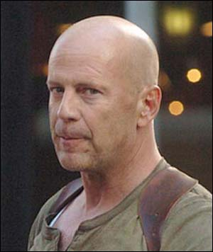
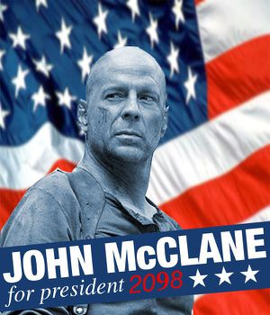

John McClane
 De: La Frikipedia, la enciclopedia extremadamente seria.
De: La Frikipedia, la enciclopedia extremadamente seria.
| De la serie héroes del mundo:
|
Bruce Willis John McClane
|
|
|
| Alias
|
El Destructor, ¡La Bomba!
|
| Superpoderes
|
Hacer explotar lo inexplotable.
|
| Novia
|
La madre McClane
|
| Enemigos
|
Moroman
|
| Ciudad donde actúa
|
Chimecallo
|
| Carácter:
|
Horrible
|
| ¿Es malo o bueno?
|
Codicioso
|
| Vestimenta
|
del mercadillo
|
| Grupo al que pertenece
|
FBI
|
| Antecedentes
|
Matar a limones con la mirada.
|
| ¿Natural o artificial?:
|
Alcholico
|
| Secuelas
|
Multiples explosivos.
|
| Juegos que protagoniza
|
Todos los de Die Hard, los del Cod, y una prueba de Saw.
|
Superpolicia corrupto protagonista que aparece en la saga de Jungla de Cristal, que no se que tiene que ver con el titulo original Die Hard (modo de los videojuegos virtualmente imposible de pasar, que los programadores ponen para poner los dientes largos a los Hakers Frikis que se intentan pasar el 100% del juego para conseguir todos los secretos).
Como estereotipo de policia americano, John McClane puede ponerse al nivel de Jack Bauer o Solid Snake. Este policia aparentemente deficiente, borracho, fracasado y sucio, no es sino un terminator del cuerpo de policia de Nueva York que, viéndose envuelto en secuestros, atentados y robos de terroristas rusos, alemanes, albano-cosobares y europeos del este en general, el consigue sobrevivir a los intentos de asesinato contra él, el fuego cruzado, las bombas, explosiones, insultos, enanos saltarines cometestículos y demás peligros para desmantelar toda la operación terrorista, matar al 90% de los terroristas, dejar incapacitados al resto y matar al jefe de la organización terrorista de forma espectacular y salvar a todos los reenes, y todo esto unicamente con su beretta reglamentaria, su placa (que unicamente la lleva para que los terroristas sepan que es poli y le frian a disparos) y una camiseta de tirantes sudada, arrugada y manda de alcohol, barro, wolframio, alquitran, kryptonita, tierra, sangre, polución y una lista intermilable de sustancias sin determinar, y todo esto descalzo.
Al final, después de innumerables heridas que, aunque le partan huesos, le rajen los pies y pierda 5 litros de sangre a lo largo de la misión, de las cuales el nunca se quejará, una maciza le cura los cortes superficiales mientras el da gritos al mínimo roce, mientras llega toda la policia, los bomberos, los S.W.A.T.S., los médicos, los Power Ranger, las ambulancias, los periodistas, el tio que le habla durante todo el dia por una radio roñosa para no darle ninguna información relevante, Superman, el batmóvil, 577.856 curiosos que no tienen nada que hacer, el FBI, Jack Bauer y Homer, que no le dan ni bola, a exepción de su jefe el comisario, que unicamente le dice: Buen trabajo. Después acaba todo como empezó, con John McClane igual de sucio que al principio, media ciudad destruida (un 55% de esa destruccion la ha causado John McClane), pero aun asi todo el mundo feliz, incluyendo a los terroristas.

John McClane al principio de su carrera como súper-policía.
 Imagen más reciente de John McClane.
- John McClane es un policía de la ciudad de Nueva York. Aunque bastantes le califican de dios o semi-dios, según él sólo es "un policía que hace su trabajo".
- John McClane es, simplemente, indestructible(exepto que Chuck Norris quiera destruirlo). A día de hoy, ha conseguido sobrevivir sin problemas a cuatro grupos terroristas, a cada cuál más armado y preparado que el anterior, y causantes de impresionantes explosiones y tiroteos.
- John McClane siempre aparece sucio y herido, pero ¡no es verdad! Sólo lo hace para que sus (en comparación con él) patéticos enemigos se confíen y le subestimen.
- Siempre se despide de sus más peligrosos enemigos con un "Yippie Ka Yei, hijo de puta", antes o después de matarlos definitivamente.
Biografia
 Futura solicitud de presidencia de McClane
Curiosidades
- Más del 55% de la destrucción total que se provoca en sus aventuras la lleva a cabo el propio McClane, pero sólo es para acabar con el mal.
- John McClane inventó el camión descapotable.
- John McClane es capaz de pilotar un caza Harrier del ejército de los EEUU montado sobre un ala del mismo.
- John McClane es capaz de derribar un helicóptero lleno de asesinos sólo con dos balas de su pistola.
- John McClane es capaz de derribar OTRO helicóptero con un coche patrulla.
- John McClane puede derribar a un tío que está dentro de un helicóptero utilizando el parachoques de su coche y una boca de riego.
- John McClane, estando colgando dentro de un todoterreno en el hueco de un ascensor mientras pelea con un enemigo y a la vez le disparan desde arriba, sabe:
- Matar a ambos enemigos.
- Salir vivo del todoterreno.
- Lanzar el vehículo al fondo del hueco, hacerlo explotar y que la deflagración no llegue hasta él.
- La sangre que cubre casi siempre a John McClane JAMÁS es la suya.
- John McClane se recupera de golpes y contusiones diez veces más rápido que cualquier otro ser humano.
- Cada bala que John McClane dispara desde un arma de mano, sea cual sea, se convierte en un demoledor y mortal disparo de Desert Eagle especial con munición explosiva.
- John McClane sabe llenar una garrafa de cinco litros con cuatro onzas de agua exactamente.
- John McClane puede caer a un barco desde un puente a más de veinte metros de altura sin hacerse daño y partiendo a un enemigo por la mitad, al barco y si hace buen tiempo al propio liquido.
- John McClane es calvo porque el pelo que le falta en la cabeza lo tiene un poco más abajo de la barriga, protegiendo sus
gigantescas pelotas órganos vitales más grandes.
Hechos irrefutables
- John McClane es indestructible, inmortal, intocable. Simplemente, es la hostia.
- La hostia, ¿entiendes?
- John McClane tiene las pelotas de un tamaño superior al de España, por lo tanto tiene más pelotas que tú, y que tú, y que tú, y que aquél de allá (a no ser alguno de ellos sea Chuck Norris, por supuesto).
- John McClane NO es Bruce Willis
- Existe un nuevo metodo de jugar a los vidiojuegos de guerra, tipo Call of Duty o Rainbow Six, llamado Metodo John McClane. Este consiste en matar a los enemigos de la manera mas espectacular posble: destruyendo los vehiculos colindantes, atravesando ventanas, lanzando granadas de 20mm a 3 metros de distancia... Todos los metodos han de llevar un considerable gasto innecesario de balas (minimo 2 cargadores)
- John McClane Siempre tiene un coportagonista en cada pelicula todos ellos diferentes el ultimo fue un friki informatico
¿Sabias que...
Véase también
Autor(es):
- Nexo
- MURO DE AGUAS
- Alex2610
- Viento
- Khazike Khashondo
- Azulejos
- Dalbo
- ShuFF
- Wwtawriter112
- Frikih
Frikipedia 2005-2016, Licencia
GFDL 1.2 - Extraído por FrikiLeaks